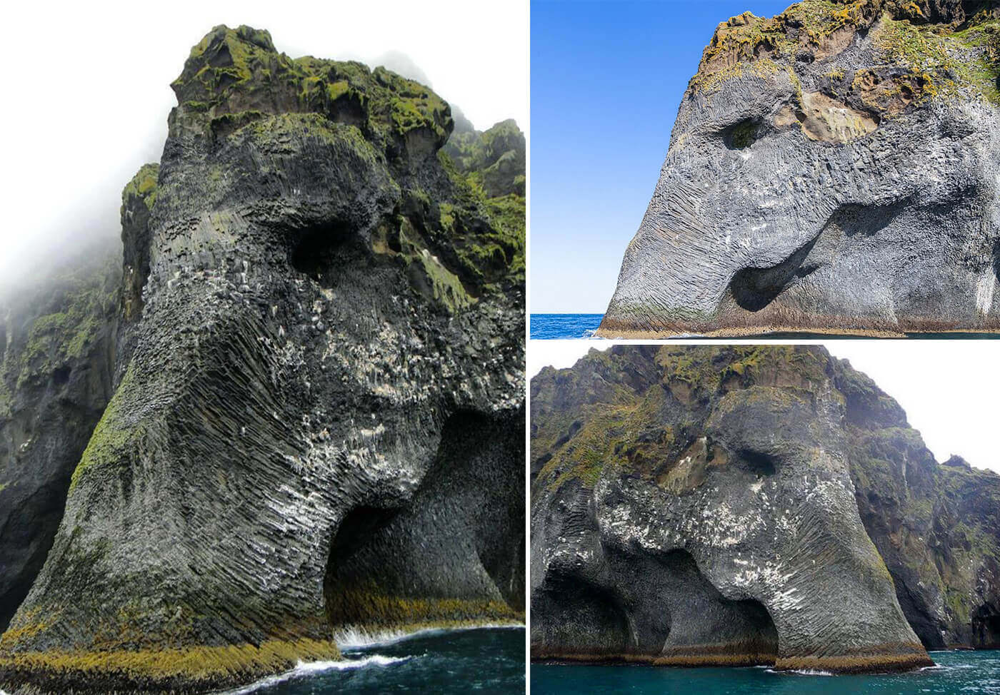

Wilpattu National Park (Puttalam district)

Wilpattu National Park is famous in Sri Lanka for many reasons. Scenic attraction, wildlife and walking trails seek the attention of large chunk of visitors. Its location of approximately 188 kilometers away from the capital city Colombo makes it easily accessible to tourists. This park is home to beasts like Leopards, Elephants, Bears, Deer, Crocodiles, Reptiles and also ample verities of birds. The unique feature of this park is that the existence of "Willus"—a natural, sand-rimmed water lake and basins or depressions filling in with rainwater make it distinct. After rainy seasons, they are dried up. Declared as a National Park in 1938, its lake contains water for the resident and migratory water-birds. The park is 1,317 km2 (508 sq mi) (131,693 hectares) in area and ranges from 0–152 m (0–499 ft) above sea level. Nearly one hundred and six lakes (Willu) and tanks are found spread throughout Wilpattu. Wilpattu is the largest and one of the oldest national parks in Sri Lanka. Wilpattu is world-renowned for its leopard (Panthera pardus kotiya) population. A remote camera survey conducted in Wilpattu from July to October 2015 by the Wilderness and Wildlife Conservation Trust captured photographs of forty-nine individual leopards in the surveyed area, the core area density of which was between that of Yala National Park's Block I and Horton Plains National Park.
Elephant Rock (Kurunegala district)
The cultural heritage of Kurunegala which was once the royal capital of Sri Lanka could be seen by the travellers by discovering its natural beauty and the diverse culture. The Elephant Rock’ or we can say Ethagala Rock’ is a very unique feature of Kurunegala town. The rock has a height of 325 m and a person would have to travel a distance of 2 km to reach the top of the rock. The other option is to take the natural pathway or the main road which is adjacent from top to bottom. The whole area is an eco-tourism destination and there are several adventure based activities also available. There is a mythical legend which says that the city of Kurunegala was bordered with a very severe drought in the olden time.